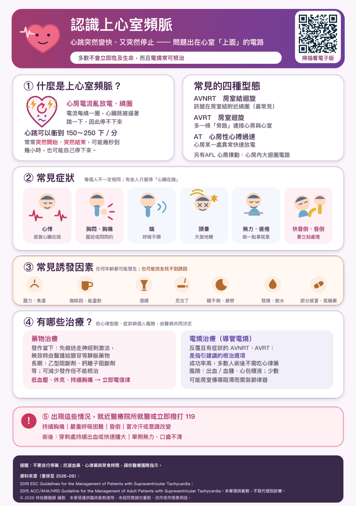

有哪些治療？
尚未播放
查看原始衛教圖卡

原稿來源與說明
資料來源（查核至 2026-09）：
2019 ESC Guidelines for the Management of Patients with Supraventricular Tachycardia；
2015 ACC/AHA/HRS Guideline for the Management of Adult Patients with Supraventricular Tachycardia。本單張供衛教，不取代個別診療。
© 2026 林祐賸醫師 編製 本單張僅供臨床衛教使用，未經同意請勿重製、改作或作商業用途。